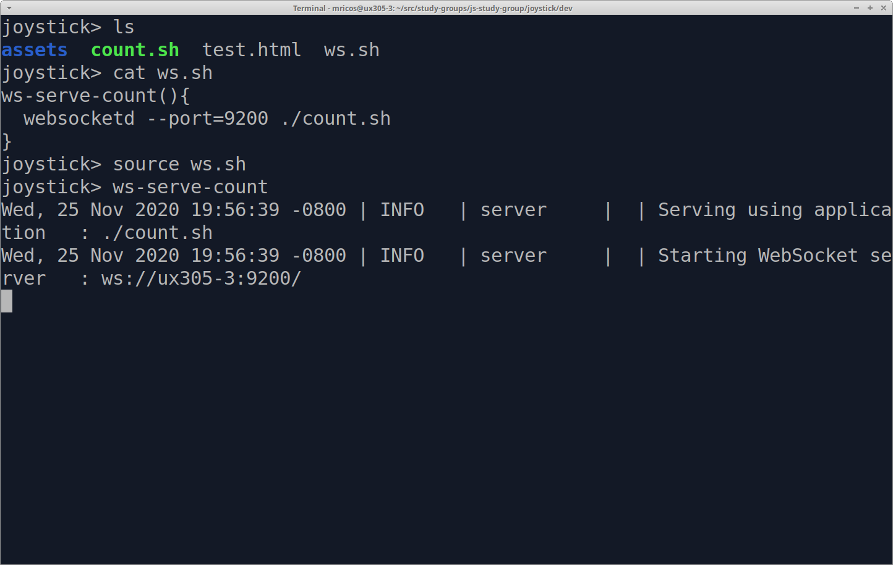
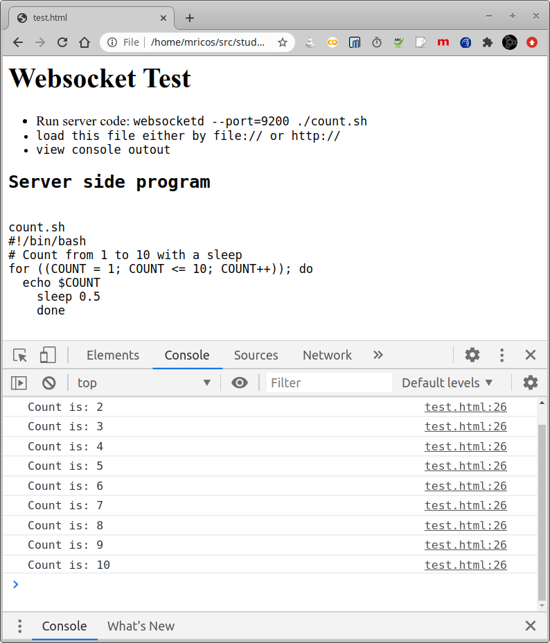

Websocket Test
- Run server code: websocketd --port=9200 ./count.sh
- load this count.html file either by file:// or http://
- view console outout
Server side program
count.sh
#!/bin/bash
# Count from 1 to 10 with a sleep
for ((COUNT = 1; COUNT <= 10; COUNT++)); do
echo $COUNT
sleep 0.5
done
Screenshots

Server running websocketd running test.sh that outputs to stdout.
